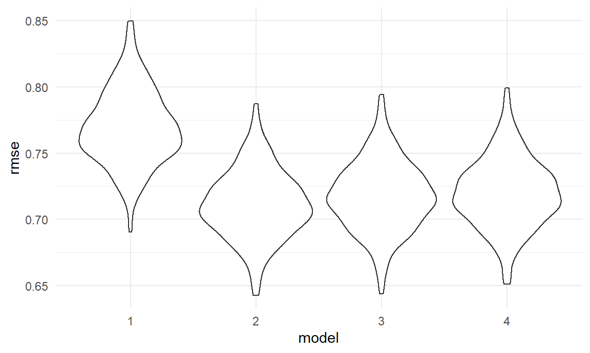

anova + regression model
haoyang,yi
2020/11/26
Anova test
Period
Anova test indicates that least two periods have different average total_sales of video games. Multiple comparison by Tukey’s method shows that significant differences exists in 2006-2010 vs 2001-2005, 2011-2015 vs 2001-2005, 2011-2015 vs 2006-2010, 2016-2020 vs 2011-2015.
Console_developers * period
Considering interaction between console_developers and period (eg. Nintendo develops less popular game in recent years while Sony maintain a relatively stable trend). The new anova model and multi-comparison shows that significant difference exists in 12 combinations among 66 combinations of developers and periodGenre
Anova test shows that there are significant differences of average total_sales between genre and 60% of comparisons in Tukey's method have signigicant differences. Also, considering interaction between console_developers and genre, the differences is still significant in anova model, with 24 significant different combinations among 105 combinations of developers and genreNumber of platforms
Anova test and multi-comparison shows that there are significant differences of average total_sales between number of platforms a game is released on. Significant difference occurs in comparisons of small and median n_platforms .
Regression models
regression_df = games_df %>%
filter(total_sale < 40) %>% # cutoff outliers
dplyr::select(total_sale,genre,console_developer,period,critic_score,n_platforms,na_sale,japan_sale,pal_sale,other_sale)Model 1: Total_sale ~ console_developer:genre + console_developer:period + console_developer:n_platforms
lm1 = lm(total_sale ~ console_developer:genre + console_developer:period + console_developer:n_platforms + 0, data = regression_df)
summary(lm1)##
## Call:
## lm(formula = total_sale ~ console_developer:genre + console_developer:period +
## console_developer:n_platforms + 0, data = regression_df)
##
## Residuals:
## Min 1Q Median 3Q Max
## -1.861 -0.648 -0.376 0.055 34.930
##
## Coefficients:
## Estimate Std. Error t value
## console_developerMicrosoft:genreAction 0.37974 0.38985 0.974
## console_developerNintendo:genreAction 0.12214 0.27273 0.448
## console_developerSony:genreAction 1.13316 0.29761 3.808
## console_developerMicrosoft:genreAgility 0.89409 0.39531 2.262
## console_developerNintendo:genreAgility 0.48227 0.27508 1.753
## console_developerSony:genreAgility 1.27349 0.30181 4.219
## console_developerMicrosoft:genreCompetition 0.41652 0.38888 1.071
## console_developerNintendo:genreCompetition 0.49082 0.27165 1.807
## console_developerSony:genreCompetition 1.17700 0.29805 3.949
## console_developerMicrosoft:genreExperience 0.50463 0.40568 1.244
## console_developerNintendo:genreExperience 0.83824 0.28280 2.964
## console_developerSony:genreExperience 0.95209 0.30482 3.123
## console_developerMicrosoft:genreIntellegence 0.16874 0.45424 0.371
## console_developerNintendo:genreIntellegence -0.05736 0.29802 -0.192
## console_developerSony:genreIntellegence 0.59941 0.33830 1.772
## console_developerMicrosoft:period2006-2010 0.47764 0.10427 4.581
## console_developerNintendo:period2006-2010 0.37242 0.08329 4.472
## console_developerSony:period2006-2010 -0.16411 0.08190 -2.004
## console_developerMicrosoft:period2011-2015 0.73727 0.12043 6.122
## console_developerNintendo:period2011-2015 0.49389 0.11841 4.171
## console_developerSony:period2011-2015 0.19206 0.09631 1.994
## console_developerMicrosoft:period2016-2020 0.27367 0.14380 1.903
## console_developerNintendo:period2016-2020 0.08313 0.22745 0.365
## console_developerSony:period2016-2020 -0.06675 0.10463 -0.638
## console_developerMicrosoft:n_platformsmedian 0.37954 0.39231 0.967
## console_developerNintendo:n_platformsmedian -0.12189 0.27449 -0.444
## console_developerSony:n_platformsmedian 0.42699 0.30128 1.417
## console_developerMicrosoft:n_platformssmall -0.24543 0.38211 -0.642
## console_developerNintendo:n_platformssmall 0.18690 0.26329 0.710
## console_developerSony:n_platformssmall -0.32653 0.29116 -1.121
## Pr(>|t|)
## console_developerMicrosoft:genreAction 0.330053
## console_developerNintendo:genreAction 0.654273
## console_developerSony:genreAction 0.000142 ***
## console_developerMicrosoft:genreAgility 0.023744 *
## console_developerNintendo:genreAgility 0.079607 .
## console_developerSony:genreAgility 2.48e-05 ***
## console_developerMicrosoft:genreCompetition 0.284166
## console_developerNintendo:genreCompetition 0.070837 .
## console_developerSony:genreCompetition 7.93e-05 ***
## console_developerMicrosoft:genreExperience 0.213579
## console_developerNintendo:genreExperience 0.003046 **
## console_developerSony:genreExperience 0.001795 **
## console_developerMicrosoft:genreIntellegence 0.710293
## console_developerNintendo:genreIntellegence 0.847379
## console_developerSony:genreIntellegence 0.076467 .
## console_developerMicrosoft:period2006-2010 4.72e-06 ***
## console_developerNintendo:period2006-2010 7.89e-06 ***
## console_developerSony:period2006-2010 0.045138 *
## console_developerMicrosoft:period2011-2015 9.74e-10 ***
## console_developerNintendo:period2011-2015 3.07e-05 ***
## console_developerSony:period2011-2015 0.046180 *
## console_developerMicrosoft:period2016-2020 0.057077 .
## console_developerNintendo:period2016-2020 0.714758
## console_developerSony:period2016-2020 0.523527
## console_developerMicrosoft:n_platformsmedian 0.333353
## console_developerNintendo:n_platformsmedian 0.657026
## console_developerSony:n_platformsmedian 0.156456
## console_developerMicrosoft:n_platformssmall 0.520698
## console_developerNintendo:n_platformssmall 0.477812
## console_developerSony:n_platformssmall 0.262123
## ---
## Signif. codes: 0 '***' 0.001 '**' 0.01 '*' 0.05 '.' 0.1 ' ' 1
##
## Residual standard error: 1.766 on 6882 degrees of freedom
## (427 observations deleted due to missingness)
## Multiple R-squared: 0.2019, Adjusted R-squared: 0.1984
## F-statistic: 58.02 on 30 and 6882 DF, p-value: < 2.2e-16plot(lm1)

Model 2: Total_sale ~ console_developer:genre + console_developer:period + console_developer:n_platforms + console_developer:critic_score
lm2 = lm(total_sale ~ console_developer:genre + console_developer:period + console_developer:n_platforms + console_developer:critic_score + 0, data = regression_df)
summary(lm2)##
## Call:
## lm(formula = total_sale ~ console_developer:genre + console_developer:period +
## console_developer:n_platforms + console_developer:critic_score +
## 0, data = regression_df)
##
## Residuals:
## Min 1Q Median 3Q Max
## -2.406 -0.681 -0.269 0.224 34.358
##
## Coefficients:
## Estimate Std. Error t value
## console_developerMicrosoft:genreAction -2.44523 0.43347 -5.641
## console_developerNintendo:genreAction -2.21527 0.31383 -7.059
## console_developerSony:genreAction -2.15213 0.33179 -6.486
## console_developerMicrosoft:genreAgility -2.02938 0.44196 -4.592
## console_developerNintendo:genreAgility -1.97384 0.32075 -6.154
## console_developerSony:genreAgility -2.07113 0.33683 -6.149
## console_developerMicrosoft:genreCompetition -2.60877 0.44106 -5.915
## console_developerNintendo:genreCompetition -1.97046 0.31831 -6.190
## console_developerSony:genreCompetition -2.29411 0.33730 -6.801
## console_developerMicrosoft:genreExperience -2.48903 0.45329 -5.491
## console_developerNintendo:genreExperience -1.68456 0.32965 -5.110
## console_developerSony:genreExperience -2.46596 0.34129 -7.226
## console_developerMicrosoft:genreIntellegence -2.72674 0.48966 -5.569
## console_developerNintendo:genreIntellegence -2.60998 0.34286 -7.612
## console_developerSony:genreIntellegence -2.82093 0.36887 -7.647
## console_developerMicrosoft:period2006-2010 0.58078 0.09969 5.826
## console_developerNintendo:period2006-2010 0.51849 0.08012 6.471
## console_developerSony:period2006-2010 -0.11254 0.07809 -1.441
## console_developerMicrosoft:period2011-2015 0.72213 0.11476 6.292
## console_developerNintendo:period2011-2015 0.47525 0.11284 4.212
## console_developerSony:period2011-2015 0.07717 0.09197 0.839
## console_developerMicrosoft:period2016-2020 0.17363 0.13726 1.265
## console_developerNintendo:period2016-2020 -0.03828 0.21692 -0.176
## console_developerSony:period2016-2020 -0.15830 0.09982 -1.586
## console_developerMicrosoft:n_platformsmedian 0.43629 0.37385 1.167
## console_developerNintendo:n_platformsmedian -0.06573 0.26160 -0.251
## console_developerSony:n_platformsmedian 0.40624 0.28709 1.415
## console_developerMicrosoft:n_platformssmall 0.00153 0.36463 0.004
## console_developerNintendo:n_platformssmall 0.29367 0.25101 1.170
## console_developerSony:n_platformssmall -0.20544 0.27752 -0.740
## console_developerMicrosoft:critic_score 0.38082 0.03011 12.647
## console_developerNintendo:critic_score 0.33910 0.02552 13.287
## console_developerSony:critic_score 0.46834 0.02455 19.076
## Pr(>|t|)
## console_developerMicrosoft:genreAction 1.76e-08 ***
## console_developerNintendo:genreAction 1.84e-12 ***
## console_developerSony:genreAction 9.40e-11 ***
## console_developerMicrosoft:genreAgility 4.47e-06 ***
## console_developerNintendo:genreAgility 7.98e-10 ***
## console_developerSony:genreAgility 8.24e-10 ***
## console_developerMicrosoft:genreCompetition 3.48e-09 ***
## console_developerNintendo:genreCompetition 6.35e-10 ***
## console_developerSony:genreCompetition 1.12e-11 ***
## console_developerMicrosoft:genreExperience 4.14e-08 ***
## console_developerNintendo:genreExperience 3.31e-07 ***
## console_developerSony:genreExperience 5.53e-13 ***
## console_developerMicrosoft:genreIntellegence 2.66e-08 ***
## console_developerNintendo:genreIntellegence 3.05e-14 ***
## console_developerSony:genreIntellegence 2.33e-14 ***
## console_developerMicrosoft:period2006-2010 5.95e-09 ***
## console_developerNintendo:period2006-2010 1.04e-10 ***
## console_developerSony:period2006-2010 0.150
## console_developerMicrosoft:period2011-2015 3.32e-10 ***
## console_developerNintendo:period2011-2015 2.56e-05 ***
## console_developerSony:period2011-2015 0.401
## console_developerMicrosoft:period2016-2020 0.206
## console_developerNintendo:period2016-2020 0.860
## console_developerSony:period2016-2020 0.113
## console_developerMicrosoft:n_platformsmedian 0.243
## console_developerNintendo:n_platformsmedian 0.802
## console_developerSony:n_platformsmedian 0.157
## console_developerMicrosoft:n_platformssmall 0.997
## console_developerNintendo:n_platformssmall 0.242
## console_developerSony:n_platformssmall 0.459
## console_developerMicrosoft:critic_score < 2e-16 ***
## console_developerNintendo:critic_score < 2e-16 ***
## console_developerSony:critic_score < 2e-16 ***
## ---
## Signif. codes: 0 '***' 0.001 '**' 0.01 '*' 0.05 '.' 0.1 ' ' 1
##
## Residual standard error: 1.683 on 6879 degrees of freedom
## (427 observations deleted due to missingness)
## Multiple R-squared: 0.2756, Adjusted R-squared: 0.2721
## F-statistic: 79.31 on 33 and 6879 DF, p-value: < 2.2e-16plot(lm2)Model 3: Total_sale ~ console_developer:genre + console_developer:n_platforms + console_developer:critic_score
lm3 = lm(total_sale ~ console_developer:genre + console_developer:n_platforms + console_developer:critic_score + 0, data = regression_df)
summary(lm3)##
## Call:
## lm(formula = total_sale ~ console_developer:genre + console_developer:n_platforms +
## console_developer:critic_score + 0, data = regression_df)
##
## Residuals:
## Min 1Q Median 3Q Max
## -2.283 -0.688 -0.282 0.217 34.681
##
## Coefficients:
## Estimate Std. Error t value
## console_developerMicrosoft:genreAction -1.86117 0.42553 -4.374
## console_developerNintendo:genreAction -1.61620 0.30305 -5.333
## console_developerSony:genreAction -2.25129 0.32687 -6.887
## console_developerMicrosoft:genreAgility -1.43771 0.43421 -3.311
## console_developerNintendo:genreAgility -1.44027 0.31281 -4.604
## console_developerSony:genreAgility -2.16015 0.33218 -6.503
## console_developerMicrosoft:genreCompetition -2.04857 0.43340 -4.727
## console_developerNintendo:genreCompetition -1.43866 0.31012 -4.639
## console_developerSony:genreCompetition -2.38893 0.33272 -7.180
## console_developerMicrosoft:genreExperience -1.82887 0.44333 -4.125
## console_developerNintendo:genreExperience -1.02722 0.31642 -3.246
## console_developerSony:genreExperience -2.56797 0.33579 -7.648
## console_developerMicrosoft:genreIntellegence -2.16408 0.48214 -4.488
## console_developerNintendo:genreIntellegence -1.95331 0.33064 -5.908
## console_developerSony:genreIntellegence -2.93511 0.36351 -8.074
## console_developerMicrosoft:n_platformsmedian 0.38075 0.37552 1.014
## console_developerNintendo:n_platformsmedian -0.16607 0.26295 -0.632
## console_developerSony:n_platformsmedian 0.43278 0.28873 1.499
## console_developerMicrosoft:n_platformssmall -0.15509 0.36511 -0.425
## console_developerNintendo:n_platformssmall 0.13998 0.25176 0.556
## console_developerSony:n_platformssmall -0.17421 0.27768 -0.627
## console_developerMicrosoft:critic_score 0.36871 0.03008 12.257
## console_developerNintendo:critic_score 0.31684 0.02534 12.505
## console_developerSony:critic_score 0.47129 0.02459 19.167
## Pr(>|t|)
## console_developerMicrosoft:genreAction 1.24e-05 ***
## console_developerNintendo:genreAction 9.96e-08 ***
## console_developerSony:genreAction 6.19e-12 ***
## console_developerMicrosoft:genreAgility 0.000934 ***
## console_developerNintendo:genreAgility 4.21e-06 ***
## console_developerSony:genreAgility 8.43e-11 ***
## console_developerMicrosoft:genreCompetition 2.33e-06 ***
## console_developerNintendo:genreCompetition 3.57e-06 ***
## console_developerSony:genreCompetition 7.71e-13 ***
## console_developerMicrosoft:genreExperience 3.75e-05 ***
## console_developerNintendo:genreExperience 0.001175 **
## console_developerSony:genreExperience 2.33e-14 ***
## console_developerMicrosoft:genreIntellegence 7.29e-06 ***
## console_developerNintendo:genreIntellegence 3.63e-09 ***
## console_developerSony:genreIntellegence 7.95e-16 ***
## console_developerMicrosoft:n_platformsmedian 0.310650
## console_developerNintendo:n_platformsmedian 0.527694
## console_developerSony:n_platformsmedian 0.133940
## console_developerMicrosoft:n_platformssmall 0.671012
## console_developerNintendo:n_platformssmall 0.578214
## console_developerSony:n_platformssmall 0.530419
## console_developerMicrosoft:critic_score < 2e-16 ***
## console_developerNintendo:critic_score < 2e-16 ***
## console_developerSony:critic_score < 2e-16 ***
## ---
## Signif. codes: 0 '***' 0.001 '**' 0.01 '*' 0.05 '.' 0.1 ' ' 1
##
## Residual standard error: 1.695 on 6888 degrees of freedom
## (427 observations deleted due to missingness)
## Multiple R-squared: 0.2641, Adjusted R-squared: 0.2615
## F-statistic: 103 on 24 and 6888 DF, p-value: < 2.2e-16plot(lm3)Model 4 : Total_sale ~ console_developer: period + console_developer:genre + console_developer:critic_score
lm4 = lm(total_sale ~ console_developer:genre + console_developer:period + console_developer:critic_score + 0, data = regression_df)
summary(lm4)##
## Call:
## lm(formula = total_sale ~ console_developer:genre + console_developer:period +
## console_developer:critic_score + 0, data = regression_df)
##
## Residuals:
## Min 1Q Median 3Q Max
## -1.988 -0.684 -0.284 0.209 34.463
##
## Coefficients:
## Estimate Std. Error t value
## console_developerMicrosoft:genreAction -2.472004 0.227052 -10.887
## console_developerNintendo:genreAction -1.978964 0.188916 -10.475
## console_developerSony:genreAction -2.365709 0.183680 -12.880
## console_developerMicrosoft:genreAgility -2.092838 0.234903 -8.909
## console_developerNintendo:genreAgility -1.709510 0.198604 -8.608
## console_developerSony:genreAgility -2.317874 0.189999 -12.199
## console_developerMicrosoft:genreCompetition -2.652828 0.238528 -11.122
## console_developerNintendo:genreCompetition -1.725657 0.198946 -8.674
## console_developerSony:genreCompetition -2.510847 0.191088 -13.140
## console_developerMicrosoft:genreExperience -2.570439 0.251836 -10.207
## console_developerNintendo:genreExperience -1.371892 0.204622 -6.705
## console_developerSony:genreExperience -2.753705 0.191904 -14.349
## console_developerMicrosoft:genreIntellegence -2.828599 0.310528 -9.109
## console_developerNintendo:genreIntellegence -2.276150 0.223096 -10.203
## console_developerSony:genreIntellegence -3.132269 0.235617 -13.294
## console_developerMicrosoft:period2006-2010 0.617680 0.099298 6.220
## console_developerNintendo:period2006-2010 0.495974 0.080062 6.195
## console_developerSony:period2006-2010 -0.030887 0.077140 -0.400
## console_developerMicrosoft:period2011-2015 0.753757 0.114984 6.555
## console_developerNintendo:period2011-2015 0.453740 0.113178 4.009
## console_developerSony:period2011-2015 0.122634 0.092107 1.331
## console_developerMicrosoft:period2016-2020 0.145904 0.137650 1.060
## console_developerNintendo:period2016-2020 -0.001479 0.217665 -0.007
## console_developerSony:period2016-2020 -0.183180 0.100178 -1.829
## console_developerMicrosoft:critic_score 0.395802 0.029951 13.215
## console_developerNintendo:critic_score 0.334992 0.025609 13.081
## console_developerSony:critic_score 0.480411 0.024586 19.540
## Pr(>|t|)
## console_developerMicrosoft:genreAction < 2e-16 ***
## console_developerNintendo:genreAction < 2e-16 ***
## console_developerSony:genreAction < 2e-16 ***
## console_developerMicrosoft:genreAgility < 2e-16 ***
## console_developerNintendo:genreAgility < 2e-16 ***
## console_developerSony:genreAgility < 2e-16 ***
## console_developerMicrosoft:genreCompetition < 2e-16 ***
## console_developerNintendo:genreCompetition < 2e-16 ***
## console_developerSony:genreCompetition < 2e-16 ***
## console_developerMicrosoft:genreExperience < 2e-16 ***
## console_developerNintendo:genreExperience 2.18e-11 ***
## console_developerSony:genreExperience < 2e-16 ***
## console_developerMicrosoft:genreIntellegence < 2e-16 ***
## console_developerNintendo:genreIntellegence < 2e-16 ***
## console_developerSony:genreIntellegence < 2e-16 ***
## console_developerMicrosoft:period2006-2010 5.25e-10 ***
## console_developerNintendo:period2006-2010 6.17e-10 ***
## console_developerSony:period2006-2010 0.6889
## console_developerMicrosoft:period2011-2015 5.95e-11 ***
## console_developerNintendo:period2011-2015 6.16e-05 ***
## console_developerSony:period2011-2015 0.1831
## console_developerMicrosoft:period2016-2020 0.2892
## console_developerNintendo:period2016-2020 0.9946
## console_developerSony:period2016-2020 0.0675 .
## console_developerMicrosoft:critic_score < 2e-16 ***
## console_developerNintendo:critic_score < 2e-16 ***
## console_developerSony:critic_score < 2e-16 ***
## ---
## Signif. codes: 0 '***' 0.001 '**' 0.01 '*' 0.05 '.' 0.1 ' ' 1
##
## Residual standard error: 1.691 on 6885 degrees of freedom
## (427 observations deleted due to missingness)
## Multiple R-squared: 0.2684, Adjusted R-squared: 0.2655
## F-statistic: 93.54 on 27 and 6885 DF, p-value: < 2.2e-16plot(lm4)Decide what variable (period, critic_score, n_platform) can stay in the model, then consider if it’s necessary to add some (but not all) regional sale into the model.
cv_df =
crossv_mc(regression_df, 1000) %>%
mutate(
train = map(train, as_tibble),
test = map(test, as_tibble)
)
cv_df =
cv_df %>%
mutate(
linear_1 = map(.x = train, ~lm(total_sale ~ console_developer:genre + console_developer:period + console_developer:n_platforms + 0, data = .x)),
linear_2 = map(.x = train, ~lm(total_sale ~ console_developer:genre + console_developer:period + console_developer:n_platforms + console_developer:critic_score + 0, data = .x)),
linear_3 = map(.x = train, ~lm(total_sale ~ console_developer:genre + console_developer:n_platforms + console_developer:critic_score + 0, data = .x)),
linear_4 = map(.x = train, ~lm(total_sale ~ console_developer:genre + console_developer:period + console_developer:critic_score + 0, data = .x))
) %>%
mutate(
rmse_1 = map2_dbl(.x = linear_1, .y = test, ~rmse(model = .x, data = .y)),
rmse_2 = map2_dbl(.x = linear_2, .y = test, ~rmse(model = .x, data = .y)),
rmse_3 = map2_dbl(.x = linear_3, .y = test, ~rmse(model = .x, data = .y)),
rmse_4 = map2_dbl(.x = linear_4, .y = test, ~rmse(model = .x, data = .y))
)cv_df %>%
dplyr::select(starts_with("rmse")) %>%
pivot_longer(
everything(),
names_to = "model",
values_to = "rmse",
names_prefix = "rmse_"
) %>%
ggplot(aes(x = model, y = rmse)) +
geom_violin()
Model 5 : Total_sale ~ console_developer:genre + console_developer:period + console_developer:n_platforms + console_developer:critic_score + na_sale (delete unnecessary variables discovered above)
lm5 = lm(total_sale ~ console_developer:genre + console_developer:period + console_developer:n_platforms + console_developer:critic_score + na_sale +0, data = regression_df)
summary(lm5)##
## Call:
## lm(formula = total_sale ~ console_developer:genre + console_developer:period +
## console_developer:n_platforms + console_developer:critic_score +
## na_sale + 0, data = regression_df)
##
## Residuals:
## Min 1Q Median 3Q Max
## -4.8043 -0.1699 -0.0161 0.1157 10.3531
##
## Coefficients:
## Estimate Std. Error t value
## na_sale 2.030138 0.009217 220.260
## console_developerMicrosoft:genreAction 0.397432 0.153299 2.593
## console_developerNintendo:genreAction -0.667365 0.110816 -6.022
## console_developerSony:genreAction -0.815334 0.117080 -6.964
## console_developerMicrosoft:genreAgility 0.244941 0.156089 1.569
## console_developerNintendo:genreAgility -0.674756 0.113185 -5.962
## console_developerSony:genreAgility -0.841046 0.118830 -7.078
## console_developerMicrosoft:genreCompetition 0.434078 0.156044 2.782
## console_developerNintendo:genreCompetition -0.612021 0.112343 -5.448
## console_developerSony:genreCompetition -0.851599 0.119047 -7.153
## console_developerMicrosoft:genreExperience 0.344272 0.160256 2.148
## console_developerNintendo:genreExperience -0.528596 0.116287 -4.546
## console_developerSony:genreExperience -0.841611 0.120495 -6.985
## console_developerMicrosoft:genreIntellegence 0.454106 0.173160 2.622
## console_developerNintendo:genreIntellegence -0.702168 0.121136 -5.797
## console_developerSony:genreIntellegence -0.912593 0.130280 -7.005
## console_developerMicrosoft:period2006-2010 -0.084704 0.035262 -2.402
## console_developerNintendo:period2006-2010 0.087151 0.028302 3.079
## console_developerSony:period2006-2010 0.073406 0.027532 2.666
## console_developerMicrosoft:period2011-2015 -0.033862 0.040587 -0.834
## console_developerNintendo:period2011-2015 0.283438 0.039773 7.126
## console_developerSony:period2011-2015 0.250980 0.032421 7.741
## console_developerMicrosoft:period2016-2020 0.056748 0.048373 1.173
## console_developerNintendo:period2016-2020 0.282087 0.076458 3.689
## console_developerSony:period2016-2020 0.208699 0.035215 5.926
## console_developerMicrosoft:n_platformsmedian 0.168267 0.131751 1.277
## console_developerNintendo:n_platformsmedian 0.108003 0.092190 1.172
## console_developerSony:n_platformsmedian 0.565723 0.101174 5.592
## console_developerMicrosoft:n_platformssmall 0.224494 0.128502 1.747
## console_developerNintendo:n_platformssmall 0.251589 0.088458 2.844
## console_developerSony:n_platformssmall 0.435362 0.097840 4.450
## console_developerMicrosoft:critic_score -0.106325 0.010840 -9.809
## console_developerNintendo:critic_score 0.046156 0.009092 5.077
## console_developerSony:critic_score 0.056415 0.008852 6.373
## Pr(>|t|)
## na_sale < 2e-16 ***
## console_developerMicrosoft:genreAction 0.009548 **
## console_developerNintendo:genreAction 1.81e-09 ***
## console_developerSony:genreAction 3.62e-12 ***
## console_developerMicrosoft:genreAgility 0.116639
## console_developerNintendo:genreAgility 2.62e-09 ***
## console_developerSony:genreAgility 1.61e-12 ***
## console_developerMicrosoft:genreCompetition 0.005421 **
## console_developerNintendo:genreCompetition 5.28e-08 ***
## console_developerSony:genreCompetition 9.34e-13 ***
## console_developerMicrosoft:genreExperience 0.031728 *
## console_developerNintendo:genreExperience 5.57e-06 ***
## console_developerSony:genreExperience 3.12e-12 ***
## console_developerMicrosoft:genreIntellegence 0.008749 **
## console_developerNintendo:genreIntellegence 7.07e-09 ***
## console_developerSony:genreIntellegence 2.71e-12 ***
## console_developerMicrosoft:period2006-2010 0.016324 *
## console_developerNintendo:period2006-2010 0.002083 **
## console_developerSony:period2006-2010 0.007688 **
## console_developerMicrosoft:period2011-2015 0.404134
## console_developerNintendo:period2011-2015 1.14e-12 ***
## console_developerSony:period2011-2015 1.12e-14 ***
## console_developerMicrosoft:period2016-2020 0.240779
## console_developerNintendo:period2016-2020 0.000226 ***
## console_developerSony:period2016-2020 3.25e-09 ***
## console_developerMicrosoft:n_platformsmedian 0.201590
## console_developerNintendo:n_platformsmedian 0.241430
## console_developerSony:n_platformsmedian 2.34e-08 ***
## console_developerMicrosoft:n_platformssmall 0.080679 .
## console_developerNintendo:n_platformssmall 0.004466 **
## console_developerSony:n_platformssmall 8.73e-06 ***
## console_developerMicrosoft:critic_score < 2e-16 ***
## console_developerNintendo:critic_score 3.94e-07 ***
## console_developerSony:critic_score 1.97e-10 ***
## ---
## Signif. codes: 0 '***' 0.001 '**' 0.01 '*' 0.05 '.' 0.1 ' ' 1
##
## Residual standard error: 0.5931 on 6878 degrees of freedom
## (427 observations deleted due to missingness)
## Multiple R-squared: 0.9101, Adjusted R-squared: 0.9096
## F-statistic: 2047 on 34 and 6878 DF, p-value: < 2.2e-16plot(lm5)Model 6 : Total_sale ~ console_developer:genre + console_developer:period + console_developer:n_platforms + console_developer:critic_score + console_developer:na_sale (delete unnecessary variables discovered above)
lm6 = lm(total_sale ~ console_developer:genre + console_developer:period + console_developer:n_platforms + console_developer:critic_score + console_developer:na_sale + 0, data = regression_df)
summary(lm6)##
## Call:
## lm(formula = total_sale ~ console_developer:genre + console_developer:period +
## console_developer:n_platforms + console_developer:critic_score +
## console_developer:na_sale + 0, data = regression_df)
##
## Residuals:
## Min 1Q Median 3Q Max
## -4.4288 -0.1367 -0.0108 0.0895 9.4995
##
## Coefficients:
## Estimate Std. Error t value
## console_developerMicrosoft:genreAction -0.305319 0.142679 -2.140
## console_developerNintendo:genreAction -0.500791 0.102283 -4.896
## console_developerSony:genreAction -0.767116 0.108276 -7.085
## console_developerMicrosoft:genreAgility -0.317308 0.144704 -2.193
## console_developerNintendo:genreAgility -0.534958 0.104400 -5.124
## console_developerSony:genreAgility -0.796676 0.109817 -7.255
## console_developerMicrosoft:genreCompetition -0.318163 0.145392 -2.188
## console_developerNintendo:genreCompetition -0.465836 0.103639 -4.495
## console_developerSony:genreCompetition -0.799567 0.110151 -7.259
## console_developerMicrosoft:genreExperience -0.356166 0.149015 -2.390
## console_developerNintendo:genreExperience -0.404201 0.107225 -3.770
## console_developerSony:genreExperience -0.783021 0.111609 -7.016
## console_developerMicrosoft:genreIntellegence -0.332250 0.161133 -2.062
## console_developerNintendo:genreIntellegence -0.496864 0.111870 -4.441
## console_developerSony:genreIntellegence -0.843760 0.120793 -6.985
## console_developerMicrosoft:period2006-2010 0.079813 0.032831 2.431
## console_developerNintendo:period2006-2010 0.040734 0.026133 1.559
## console_developerSony:period2006-2010 0.080114 0.025395 3.155
## console_developerMicrosoft:period2011-2015 0.153030 0.037779 4.051
## console_developerNintendo:period2011-2015 0.262796 0.036644 7.172
## console_developerSony:period2011-2015 0.257249 0.029890 8.607
## console_developerMicrosoft:period2016-2020 0.085643 0.044565 1.922
## console_developerNintendo:period2016-2020 0.316562 0.070440 4.494
## console_developerSony:period2016-2020 0.221936 0.032545 6.819
## console_developerMicrosoft:n_platformsmedian 0.234526 0.121374 1.932
## console_developerNintendo:n_platformsmedian 0.126698 0.084921 1.492
## console_developerSony:n_platformsmedian 0.571475 0.093200 6.132
## console_developerMicrosoft:n_platformssmall 0.169374 0.118376 1.431
## console_developerNintendo:n_platformssmall 0.247061 0.081480 3.032
## console_developerSony:n_platformssmall 0.458476 0.090242 5.081
## console_developerMicrosoft:critic_score 0.014104 0.010581 1.333
## console_developerNintendo:critic_score 0.014632 0.008465 1.729
## console_developerSony:critic_score 0.041557 0.008680 4.788
## console_developerMicrosoft:na_sale 1.528256 0.016889 90.488
## console_developerNintendo:na_sale 2.248606 0.012050 186.612
## console_developerSony:na_sale 2.103365 0.016951 124.087
## Pr(>|t|)
## console_developerMicrosoft:genreAction 0.032398 *
## console_developerNintendo:genreAction 1.00e-06 ***
## console_developerSony:genreAction 1.53e-12 ***
## console_developerMicrosoft:genreAgility 0.028355 *
## console_developerNintendo:genreAgility 3.07e-07 ***
## console_developerSony:genreAgility 4.47e-13 ***
## console_developerMicrosoft:genreCompetition 0.028680 *
## console_developerNintendo:genreCompetition 7.08e-06 ***
## console_developerSony:genreCompetition 4.33e-13 ***
## console_developerMicrosoft:genreExperience 0.016869 *
## console_developerNintendo:genreExperience 0.000165 ***
## console_developerSony:genreExperience 2.51e-12 ***
## console_developerMicrosoft:genreIntellegence 0.039249 *
## console_developerNintendo:genreIntellegence 9.07e-06 ***
## console_developerSony:genreIntellegence 3.11e-12 ***
## console_developerMicrosoft:period2006-2010 0.015081 *
## console_developerNintendo:period2006-2010 0.119114
## console_developerSony:period2006-2010 0.001614 **
## console_developerMicrosoft:period2011-2015 5.16e-05 ***
## console_developerNintendo:period2011-2015 8.19e-13 ***
## console_developerSony:period2011-2015 < 2e-16 ***
## console_developerMicrosoft:period2016-2020 0.054678 .
## console_developerNintendo:period2016-2020 7.10e-06 ***
## console_developerSony:period2016-2020 9.93e-12 ***
## console_developerMicrosoft:n_platformsmedian 0.053368 .
## console_developerNintendo:n_platformsmedian 0.135759
## console_developerSony:n_platformsmedian 9.18e-10 ***
## console_developerMicrosoft:n_platformssmall 0.152529
## console_developerNintendo:n_platformssmall 0.002437 **
## console_developerSony:n_platformssmall 3.86e-07 ***
## console_developerMicrosoft:critic_score 0.182610
## console_developerNintendo:critic_score 0.083943 .
## console_developerSony:critic_score 1.72e-06 ***
## console_developerMicrosoft:na_sale < 2e-16 ***
## console_developerNintendo:na_sale < 2e-16 ***
## console_developerSony:na_sale < 2e-16 ***
## ---
## Signif. codes: 0 '***' 0.001 '**' 0.01 '*' 0.05 '.' 0.1 ' ' 1
##
## Residual standard error: 0.5463 on 6876 degrees of freedom
## (427 observations deleted due to missingness)
## Multiple R-squared: 0.9237, Adjusted R-squared: 0.9233
## F-statistic: 2312 on 36 and 6876 DF, p-value: < 2.2e-16plot(lm6)cv_df_else =
crossv_mc(regression_df, 1000) %>%
mutate(
train = map(train, as_tibble),
test = map(test, as_tibble)
)
cv_df_else =
cv_df_else %>%
mutate(
linear_5 = map(.x = train, ~lm(total_sale ~ console_developer:genre + console_developer:period + console_developer:n_platforms + console_developer:critic_score + na_sale +0, data = .x)),
linear_6 = map(.x = train, ~lm(total_sale ~ console_developer:genre + console_developer:period + console_developer:n_platforms + console_developer:critic_score + console_developer:na_sale + 0, data = .x)),
linear_7 = map(.x = train, ~lm(total_sale ~ console_developer:genre + console_developer:period + console_developer:n_platforms + console_developer:critic_score + japan_sale + 0, data = .x))
#linear_8 = map(.x = train, ~lm(total_sale ~ console_developer:genre + console_developer:period + console_developer:n_platforms + console_developer:critic_score + console_developer:japan_sale + 0, data = .x))
) %>%
mutate(
rmse_5 = map2_dbl(.x = linear_5, .y = test, ~rmse(model = .x, data = .y)),
rmse_6 = map2_dbl(.x = linear_6, .y = test, ~rmse(model = .x, data = .y)),
rmse_7 = map2_dbl(.x = linear_7, .y = test, ~rmse(model = .x, data = .y))
#rmse_8 = map2_dbl(.x = linear_8, .y = test, ~rmse(model = .x, data = .y))
)cv_df_else %>%
dplyr::select(starts_with("rmse")) %>%
pivot_longer(
everything(),
names_to = "model",
values_to = "rmse",
names_prefix = "rmse_"
) %>%
ggplot(aes(x = model, y = rmse)) +
geom_violin()